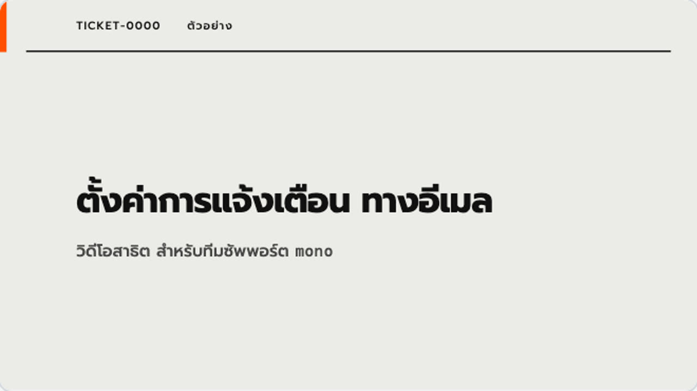
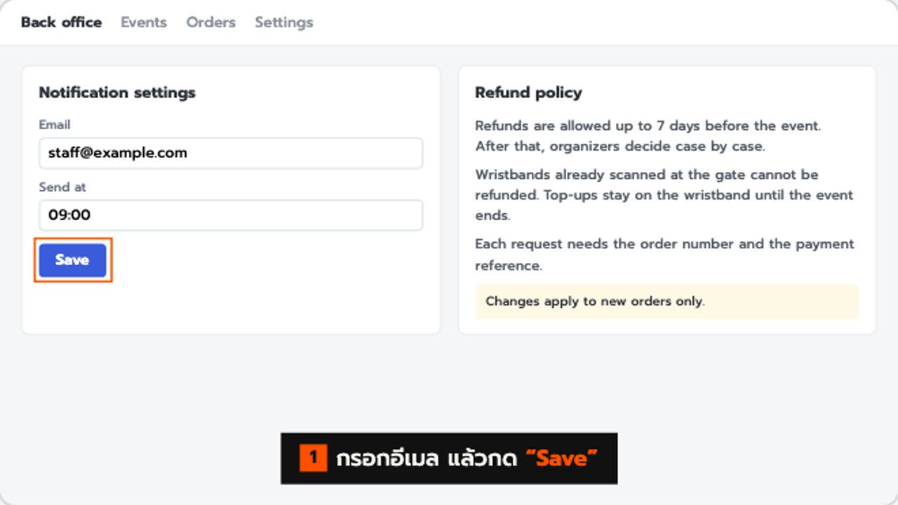
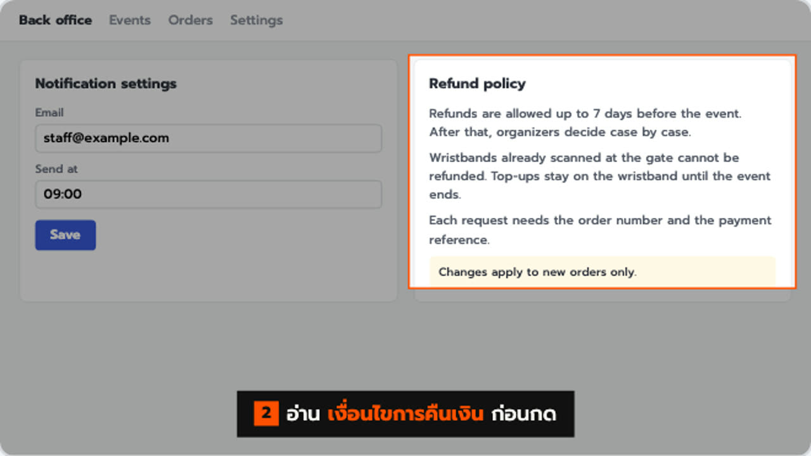
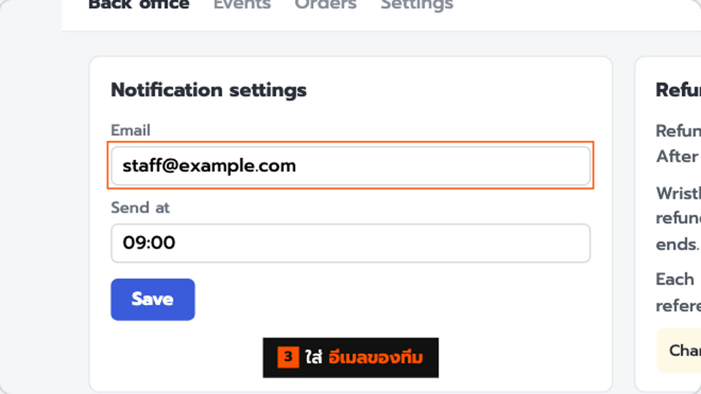
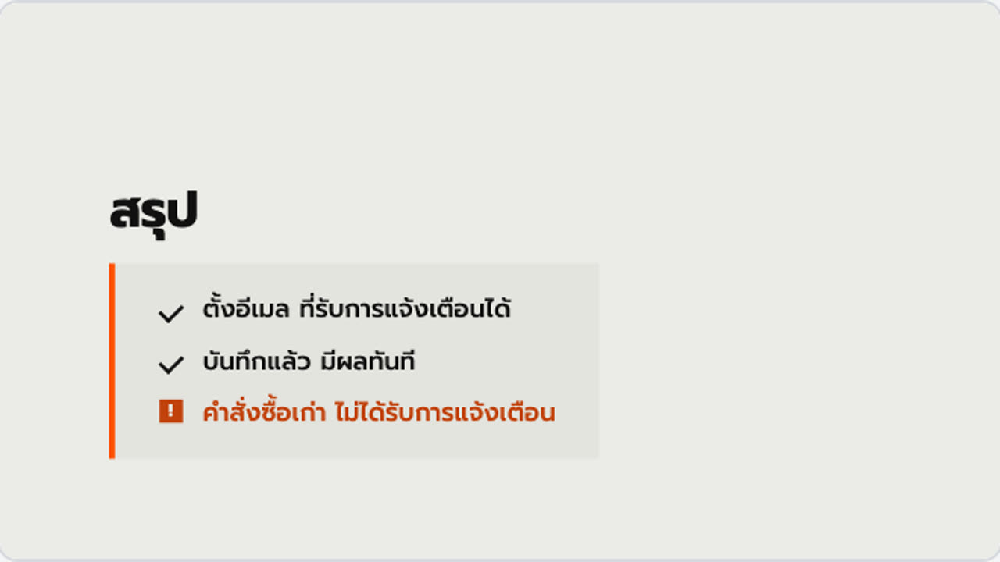
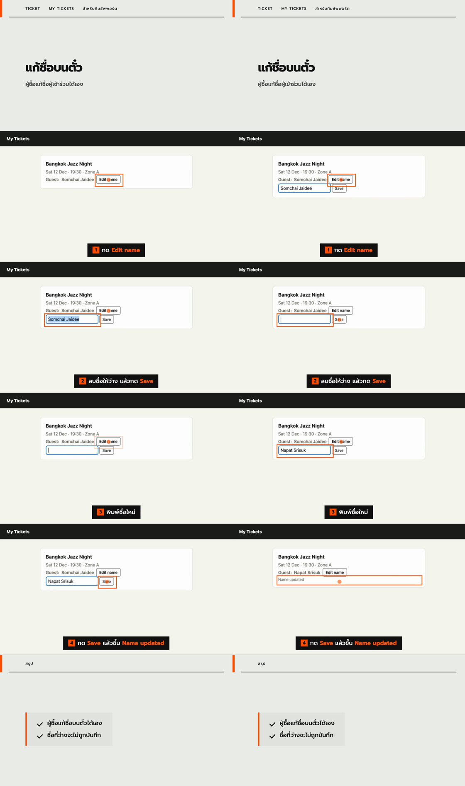

Make a walkie
What goes into a walkie before anything is recorded: the storyboard, the narration the voice reads, the parts drawn over the page, and the profile that sets their look. Then how the recording becomes layers and one MP4.
You rarely write these by hand. Claude writes the storyboard and the spec for you and stops for your approval. This page is so you can read what it shows you, ask for the right change, and set up your team's profile.
Every example on this page comes from one real walkie: the demo in the getting started video, where a guest edits the name on their ticket.
From a change to a video
- Brief. You say what changed, for whom, and how to start the app.
- Storyboard. One scene per step, each with a caption, a highlight and a line of Thai narration. Every line is voiced right away and checked for pace.
- Checkpoint 1. You approve the storyboard. Nothing is recorded before this.
- Spec. A Playwright script that does each step, with a check after each one.
- Record. The app is recorded clean. The captions, highlights and cards are logged, not drawn.
- Build. Page, overlay and voice are built as separate layers and mixed into one MP4.
- Checkpoint 2. You approve the contact sheet and the MP4.
Before recording
Storyboard, narration, voice. Cheap to change: seconds per lineRecording
Real time, one at a time on the machine. Change only when steps or timing changeAfter recording
Text, look and voice change without recording againWhat's in a walkie
The engine draws these over the recorded page. The pictures below are the built-in default profile, from walkie preview default.

n0.



| Part | In the spec | Look set in |
|---|---|---|
| Intro card | demo.intro(html, "n0") | theme.json cards.intro; on or off in sequence.json |
| Step caption | demo.stepCaption(html); demo.caption(html) without a number | layout.caption, colors.primary, colors.emphasis for <b> |
| Highlight | demo.highlight(locator); null hides it | layout.highlight, colors.highlight |
| Spotlight | highlight(locator, { spotlight: true }) | layout.spotlight |
| Focus zoom | highlight(locator, { zoom: true }) | layout.focus_zoom |
| Cursor | demo.click(locator), demo.moveTo(locator) | — |
| Veil | demo.goto(url), demo.navigate(fn): the page fades out and back in on every page change | layout.fade_ms |
| Chapter card | demo.chapter(html, clip?) | cards.chapter; on in sequence.json |
| Summary card | demo.summary(html, clip) | cards.summary, colors.warn for li.warn |
| Outro card | demo.outro(clip?) | outro_html in sequence.json; off by default |
The storyboard
One row per scene. The first row is the intro, the last is the summary. Each row has five fields:
| Field | What it is | Example |
|---|---|---|
| clip | The clip's name: n0 for the intro, then n1, n2… The spec plays it with demo.say("n1") | n1 |
| caption | The step's caption, spelled exactly as the UI shows it. <b> marks a UI word | กด <b>Edit name</b> |
| highlight | The one element to mark: a field or a button, never a whole form | #edit |
| action | What happens on screen, in plain words | open page, click Edit name |
| narration | The Thai line the voice reads, written for the ear. Spaces are breaths (see narration) | เปิดหน้าตั๋ว แล้วกดปุ่ม แก้ไขชื่อ ที่อยู่ข้างชื่อผู้เข้าร่วม |
The storyboard of the demo walkie, as Claude wrote it:
[
{ "clip": "n0", "caption": "แก้ชื่อบนตั๋ว", "action": "intro card",
"narration": "วิดีโอนี้ แสดงวิธีแก้ชื่อผู้เข้าร่วม บนตั๋ว ที่ผู้ซื้อทำเองได้แล้ว" },
{ "clip": "n1", "caption": "กด <b>Edit name</b>", "highlight": "#edit",
"action": "open page, click Edit name",
"narration": "เปิดหน้าตั๋ว แล้วกดปุ่ม แก้ไขชื่อ ที่อยู่ข้างชื่อผู้เข้าร่วม" },
{ "clip": "n2", "caption": "ลบชื่อให้ว่าง แล้วกด <b>Save</b>", "highlight": "#input",
"action": "clear input, click Save; name stays Somchai Jaidee",
"narration": "ช่องกรอกชื่อจะขึ้นมา พร้อมชื่อเดิม ถ้าลบชื่อจนว่าง แล้วกดบันทึก ระบบจะเก็บชื่อเดิมไว้ ไม่ปล่อยให้ชื่อว่าง" },
…
{ "clip": "n5", "caption": "สรุป", "action": "summary card",
"narration": "สรุป ผู้ซื้อแก้ชื่อบนตั๋วได้เอง และชื่อจะไม่ว่างเปล่า" }
]A good storyboard:
- has one step per scene, in the order a person would do it;
- shows the error path before the fix when the change is a guard (here: a blank name keeps the old one);
- is written for the audience: support, operations or organizers, not engineers;
- keeps captions short and in the UI's spelling, and puts the explaining in the narration.
Checkpoint 1. As soon as the storyboard is saved, every line is voiced, and you get it back as a table with each line's length, pace and a check. This is the table from the demo:
| Clip | Caption | Length | Pace | Check |
|---|---|---|---|---|
| n0 | แก้ชื่อบนตั๋ว | 5.42s | 4.1/s | OK |
| n1 | กด Edit name | 4.64s | 3.4/s | OK |
| n2 | ลบชื่อให้ว่าง แล้วกด Save | 8.08s | 3.7/s | OK |
| n3 | พิมพ์ชื่อใหม่ | 3.07s | 3.9/s | OK |
| n4 | กด Save แล้วขึ้น Name updated | 5.01s | 3.8/s | OK |
| n5 | สรุป | 3.90s | 4.1/s | OK |
Pace is syllables a second. Under it come the phonemes of each line, so you can check each word reads as meant; | is a breath:
n1: pɤːt↓ naː↘ tua↗ | lɛːw↑ kot↓.pum↓ | kɛː↘.kʰaj↗ ʨʰɯː↘ | tʰiː↘.juː↓ kʰaːŋ↘ ʨʰɯː↘ pʰuː↘.kʰaw↘.ruam↘Approve it, or ask for changes in plain words: “drop step 2”, “say n3 more simply”, “show the error first”. Changing a line here costs seconds; after recording, a new step costs a new recording.
Writing narration for the voice
The voice is MakHam, a Thai text-to-speech model. It reads Thai script only, and it voices each phrase on its own: every space is a breath, with a short pause (phrase_gap, 0.12 s) between phrases.
The three flags
| Flag | Means | Fix |
|---|---|---|
| FAST | Over max_rate (4.3 syllables a second): too much said in one breath | Add a space where a person would breathe |
| CHOPPY | 3 or more phrases averaging under 4 syllables: too many breaths | Join short phrases |
| DROPPED | A sound the model cannot say | Respell it, or add a lexicon entry |
Before and after
Real output of the voice for lines that go wrong, and their fixes:
| Line | Length, pace | Check | Why |
|---|---|---|---|
| เปิดหน้าตั๋วแล้วกดปุ่มแก้ไขชื่อที่อยู่ข้างชื่อผู้เข้าร่วมแล้วพิมพ์ชื่อใหม่ที่ต้องการแล้วกดบันทึก | 4.88s, 5.5/s | FAST | No space: one breath for 27 syllables |
| เปิดหน้าตั๋ว แล้วกดปุ่ม แก้ไขชื่อ ที่อยู่ข้างชื่อผู้เข้าร่วม | 4.64s, 3.4/s | OK | A space every 4 to 8 syllables |
| การเติมเงิน สปาร์ก ที่ หน้า งาน | 3.75s, 2.1/s | CHOPPY | A space between every short word |
| การเติมเงินสปาร์ก ที่หน้างาน | 2.14s, 3.7/s | OK | Two phrases, as a person says it |
| กด save แล้ว confirm | 3.78s, 3.4/s | CHOPPY | English is spelled letter by letter: “เอส เอ วี อี” |
| กดเซฟ แล้วคอนเฟิร์ม | 1.72s, 2.9/s | OK | The English word in Thai script |
Rules of thumb
- A space every 6 to 10 syllables, where a person would breathe. Not between short words.
- English UI words in Thai script:
เซฟ,คอนเฟิร์ม แอนด์ เซฟ, or their Thai meaning:บันทึก. The caption keeps the UI's spelling; only the narration is spelled for the ear. - A word the model misreads (บอกว่า read as bɔː kwaː): reword the line.
- A sound no spelling reaches, such as a brand name with a high tone: write its phonemes inline, or add it to the profile's lexicon.
การเติมเงินสปาร์กreadssa↓.paːk↓;การเติมเงิน{sa↓.paːk↑}readssa↓.paːk↑. - Tones in phonemes:
↓low,→mid,↑high,↗rising,↘falling;.between syllables.
To hear a word before it goes in a line, ask Claude to preview it (walkie:voice_preview). To fix a word for every walkie of a team, ask Claude to add it to the lexicon (walkie:lexicon), which writes it to the profile's voice.json:
{
"lexicon": { "สปาร์ก": "sa↓.paːk↑" }
}The spec: doing each step
After checkpoint 1, Claude writes demo.spec.ts (for a Flutter app, demo_test.dart) from the profile's template. Every scene has the same shape:
- highlight the element,
- caption the step,
- say the clip,
- act: click, type, scroll,
- expect the result.
await test.step("Blank name", async () => {
await demo.highlight(input)
await demo.stepCaption("ลบชื่อให้ว่าง แล้วกด <b>Save</b>")
await demo.say("n2")
await demo.pause(1500)
await input.fill("")
await demo.click(save)
await expect(guest).toHaveText("Somchai Jaidee") // the guard works
await demo.untilQuiet()
})The expect matters: if the change is broken, the recording fails instead of making a video of the wrong thing. When that happens, Claude tells you; the bug is in the change, not the walkie.
| Call | Does |
|---|---|
say(clip) / untilQuiet() | Waits for the previous clip, then starts this one / waits for the current clip to end |
click(locator) / moveTo / scrollTo | Moves the cursor smoothly, then clicks / scrolls |
goto(url) / navigate(fn) | Changes page behind the veil. Use it for every page change after the intro, or a dark page cuts to a light one (a FLASH) |
pause(ms) | Holds the frame (default 2.2 s) so a viewer can read |
finish() | Writes the timeline. Always last |
Login and seed data run before the intro: everything before demo.intro() is cut from the video. A team keeps that code in its profile's helpers.ts.
Configure the look and voice
A profile is a folder with your team's look, voice and notes. The built-in default is the base: your profile lists only what it changes, and each file is merged over default's. Keep it in its own repo and install it once per machine:
git clone <profile repo> ~/.config/walkie/profiles/<name>
walkie preview <name> preview.html && open preview.htmlwalkie preview draws every part above in your profile's look, on a sample page. Or ask Claude “Make a walkie profile for this repo”: it asks one question at a time and writes only what differs.
| File | Holds |
|---|---|
| profile.json | Which repos use it (match: git remote globs), where the app runs (record.base_url), the work folder, the template |
| theme.json | Colors, fonts, layout and sizes, cards, and hide: selectors of dev-only UI to keep out of the video |
| sequence.json | Which cards a walkie has: intro, chapter, summary, outro; step numbers |
| voice.json | Voice engine, language, model, speed, pauses, and the lexicon |
| NOTES.md | How this repo starts the app, seeds data and logs in, and its gotchas. Claude reads it before writing the spec |
| template.spec.ts | The spec Claude starts from |
| helpers.ts | Optional: your login and seed-data code |
theme.json
Sizes are pixels of the final video. The defaults:
| Key | Default | Sets |
|---|---|---|
colors.primary / on_primary | #111111 / #f6f6f3 | Caption bar and its text |
colors.emphasis | #ff4f00 | <b> words, step badge |
colors.highlight | #ff4f00 | Highlight box |
colors.card_background / card_text | #ebebe8 / #111111 | Cards |
colors.warn | #c2410c | Warning items on the summary |
fonts.sans | Prompt Medium, Bold | All overlay text (paths to font files in the profile) |
layout.video | [1280, 720] | Video size |
layout.zoom | 1.5 | Page scale, like a browser at 150 % |
layout.shape | square | round for rounded corners |
layout.caption | bottom, 32, margin 28 | Caption position and size |
layout.highlight | width 4, pad 8 | Highlight box |
layout.fade_ms | 600 | Fades and the veil |
cards.all | left, padding 140, no logo | Card alignment, logo, background; per kind in cards.intro etc. |
sequence.json
{
"intro": true,
"chapter": false,
"summary": true,
"outro": false,
"step_numbers": true,
"chapter_ms": 2000,
"outro_html": ""
}voice.json
| Key | Default | Sets |
|---|---|---|
engine / language | makham / th | The speech engine and its language |
model | makham_female | The voice. paradee is 15× faster but buzzy: for drafts |
speed | 1.2 | How fast it speaks |
phrase_gap | 0.12 | Seconds of pause at each space |
max_rate | 4.3 | Syllables a second above which a line is flagged FAST |
breath | cut | Breaths: cut, soften (by breath_db) or keep |
eq | a soft high cut | An ffmpeg filter on each clip |
lexicon | {} | Word to phonemes, for words no spelling reaches |
A change to theme.json applies to a finished walkie with a rerender. A change to sequence.json, the zoom or the video size changes timing, so it needs a new recording.
Record, layers and the mix
After checkpoint 1, Claude starts the app and records. Recording waits its turn: heavy work runs one step at a time on the machine, because a recording is real time and stutters when the CPU is busy.
- Record. Playwright runs the spec against your app. Nothing is drawn on the page; every caption, highlight and card is logged with its time.
- Cut. Everything before the intro (login, seed data) is cut off: the page layer,
content.mp4. - Overlay. The logged events are drawn as frames at full video size in your profile's look.
- Voice. Each clip is placed where the spec said it.
- Mix. Page, overlay and voice become
walkie.mp4. - Check. Two frames per clip go on a contact sheet, and every frame is checked for a FLASH (a dark-to-light cut).
| Layer | File | Changed by |
|---|---|---|
| Page | content.mp4 | A new recording |
| Overlay | events.json + theme.json | Rerender |
| Text | Captions and card HTML inside events.json | Texts, then rerender |
| Voice | voice/<clip>.wav | Revoice |
Checkpoint 2. You get the MP4 and the contact sheet: for each clip, the frame where it starts and where it ends. Check every step shows its caption and its highlight on the right element.

Finished walkies go to ~/Library/Application Support/walkie/videos/<repo>--<name>/, with their layers, the storyboard, the spec and the contact sheet.
Change a finished walkie
Ask for the change in plain words. Claude changes only the layer it touches:
| You want | Claude does | Records again? |
|---|---|---|
| A narration line said differently | Revoices those clips | No |
| A caption or card worded differently | Changes the text, rerenders | No |
| Other colors, fonts, sizes, card style or logo | Changes the profile, rerenders | No |
| A different step, order, page, pause, zoom or video size | Edits the spec and storyboard, records | Yes |
A new narration line must fit the gap the old one had. If it can't be shortened enough, that one needs a new recording.